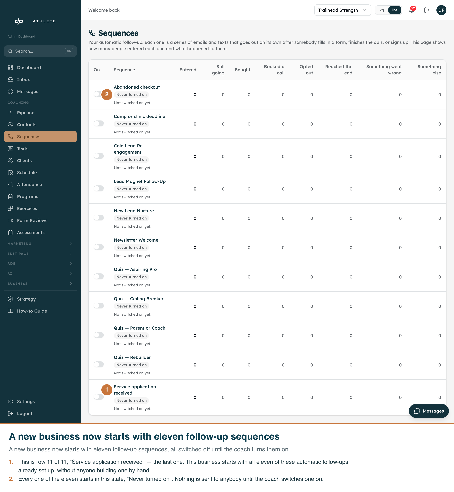
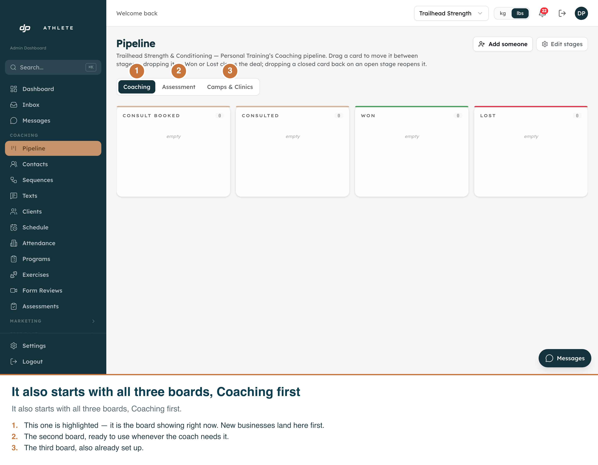

G32 — a backfilled business starts with a full starter set
Two screens of "Trailhead Strength & Conditioning", a coach's business on the dev clone that
migration 00279 backfilled after the fact. Captured in the real running app on the real
routes, signed in as the dev-clone operator via /api/dev/login, with the
djp_business cookie set to Trailhead so the admin panel reads and writes its
data. Annotations are burned into each PNG. Captured 2026-09-26 by
scripts/capture-g32-starter-set-screenshots.mjs.
What these shots are, and are not
Nothing was written to the database. Both routes are read-only pages; the script
never clicks a sequence's on/off switch, never drags a pipeline card, and never submits a form.
Light only. The admin screens have no working dark mode, so there is no dark shot.
Proven, not assumed, that this is Trailhead's screen and not the platform's own.
The platform's business ("Primary") was also backfilled by the same migration and ended up with the
same three board names, also all active, also Coaching first — a wrong-tenant pipeline shot would
look almost identical at a glance. The capture script instead reads the page's own sentence, which
the server builds from Trailhead's own business name ("Trailhead Strength & Conditioning —
Personal Training's Coaching pipeline") — a sentence Primary's page can never produce. For the
sequences shot, the tell is sharper: Primary has twelve sequences, including one
("SMS Re-permission Ask") that Trailhead does not have at all, and four of Primary's are not
"Never turned on". The script throws if the row count is not exactly eleven, if any row reads
anything other than "Never turned on", or if Primary's extra sequence appears on screen.
The business switcher, top right, is not staged. It shows "Trailhead Strength" on
both shots because that cookie is genuinely what the request carried — it is there as a visible
cross-check, not a prop.

1 · Eleven follow-up sequences, all switched off
A new business now starts with eleven follow-up sequences, all switched off until the coach turns
them on. Every row reads "Never turned on" and shows zero people in it — nobody built any of these
by hand, and nothing has gone out to anybody yet.

2 · All three pipeline boards, Coaching first
It also starts with all three boards, Coaching first. A coach who wants to track assessments or
camps separately from ongoing coaching does not have to build those boards — they are already
there, empty and ready.